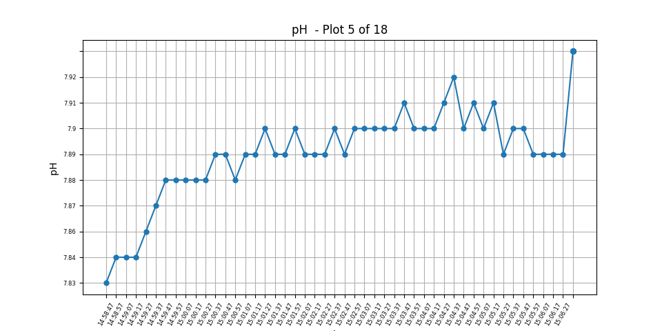
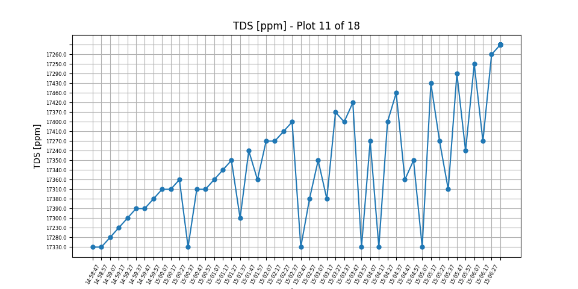
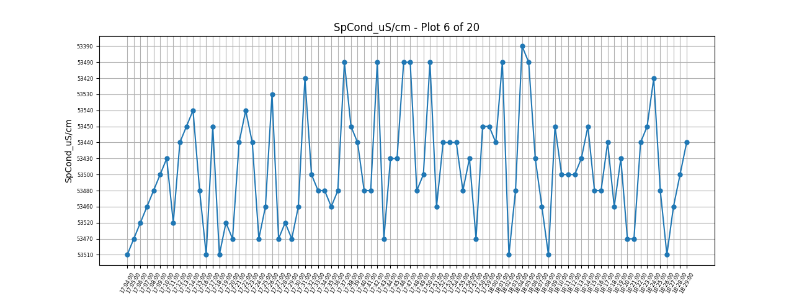
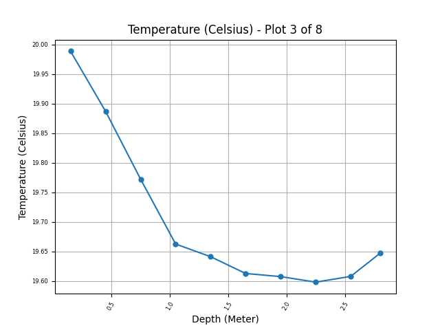

Proof of concept part of the class 2.00A (Designing for the Future: Earth, Sea, and Space). Aim of design
was to optimize water collection for marine research. Worked with other students to design a
modular system with detachable test tubes and a peristaltic pump that turns and dispenses water from
flexible tube. I was largely in charge of laser cutting, CAD-ing, and 3D-printing parts.
Finished ProjectCADs for Laser-Cut Acrylic Base (Left) and Gear-Bearing System (Right)
Ladder Climbing Robot
Timeline: March-May 2023
Part of project by MIT Robotics Team for a showcase. Primarily in charge of designing and building the
sliding hooks that snap onto ladder rungs with assistance of rubber bands.
CAD of my Hook Assembly Design and Team's Assembly
Sensory Steam Roller (in progress)
Timeline: January 2024-Present
Passion project that I will build with my friends for my dorm, Random Hall. I'm in charge of designing,
CAD-ing, and machining for the most part.
Data Processor and Grapher for Marine Research
Timeline: Jun-July 2023
Program part of my undergraduate research in coastal acidification during summer of 2023. Designed to process and graph data from the Hanna, Manta +35, and YSI CastAway sensors. Using the Python library matplotlib, I
converted files to .csv when needed, cleaned the data, and then graphed it on an interactive
interface where when you click the window, it cycles through different parameters.
Program is meant to be ran through command line interface.


Data from Hanna

Data from Manta

Data from YSI Castaway
Personal Jeopardy Game (for fun lol)
Timeline: March-May 2020
Passion project where I used Visual Basic .net to make an individual Jeopardy game. Structured like Jeopardy but more like
a trivia game where you enter your answer under a 30-second time constraint.
*Bug: the highest percent correct doesn't show up correctly for some reason.